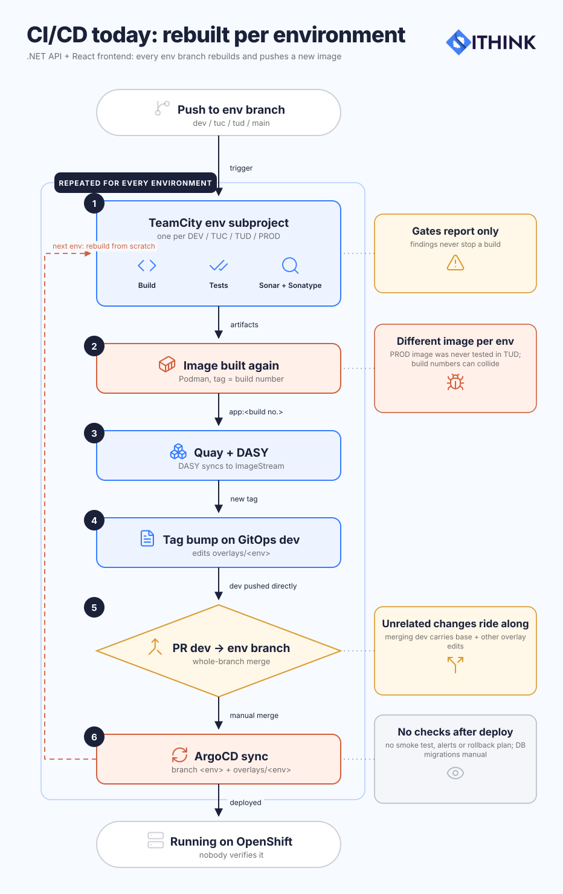
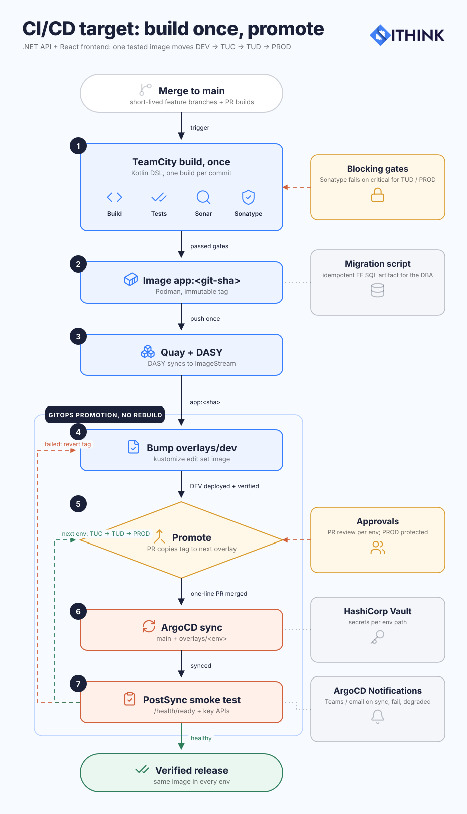

.NET API and React frontend on OpenShift. Today every environment rebuilds its own image. In the target design, one image is built per commit and the same tag is promoted DEV → TUC → TUD → PROD through GitOps PRs.


| Area | Today | Target |
|---|---|---|
| Image | Rebuilt in every env subproject | Built once per commit, same image in every env |
| Tag | TeamCity build number | app:<git-sha>, immutable |
| Tag bump | Edits overlay on GitOps dev branch | kustomize edit set image on overlays/dev |
| Promotion | Whole-branch PR dev → env branch | One-line PR copying the tag to the next overlay |
| GitOps repo | Branch per env + overlay per env | One branch, overlay per env (PROD protected) |
| Source branches | dev / tuc / tud / main | main + short-lived feature branches |
| Quality gates | Sonar + Sonatype report only | Sonatype blocks critical for TUD / PROD |
| DB migrations | Manual, not tied to a build | Idempotent EF SQL script shipped with each build, still run by the DBA |
| After deploy | Nothing | PostSync smoke test, ArgoCD Notifications, rollback by reverting the tag |